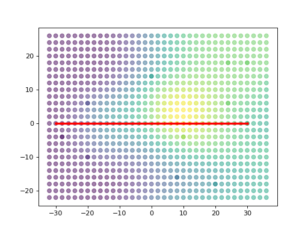
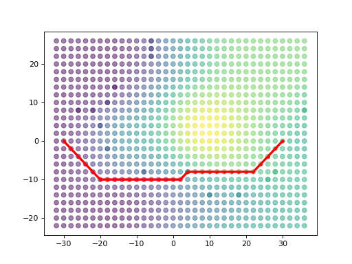

Path Plan with Different Costs¶
>>> import matplotlib.pyplot as plt
>>> import numpy as np
>>>
>>> import humanfactorspy
>>> from humanfactorspy.geometry import LoadOBJ, CommonRotations
>>> from humanfactorspy.graphgenerator import GenerateGraph
>>> from humanfactorspy.raytracer import EmbreeBVH
>>> from humanfactorspy.pathfinding import DijkstraShortestPath
>>> from humanfactorspy.spatialstructures.cost_algorithms import (
... CalculateEnergyExpenditure, CostAlgorithmKeys)
>>> # Get a sample model path
>>> obj_path = humanfactorspy.get_sample_model("energy_blob_zup.obj")
>>>
>>> # Load the obj file
>>> obj = LoadOBJ(obj_path)
>>>
>>> # Create a BVH
>>> bvh = EmbreeBVH(obj)
>>>
>>> # Set the graph parameters
>>> start_point = (-30, 0, 20)
>>> spacing = (2, 2, 180)
>>> max_nodes = 5000
>>> up_step, down_step = 30, 70
>>> up_slope, down_slope = 60, 60
>>> max_step_connections = 1
>>>
>>> # Generate the Graph
>>> graph = GenerateGraph(bvh, start_point, spacing, max_nodes,
... up_step,up_slope,down_step,down_slope,
... max_step_connections, cores=-1)
>>> # Get Nodes
>>> nodes = graph.getNodes()
>>> print(f"Graph Generated with {len(nodes.array)} nodes")
Graph Generated with 886 nodes
>>> # Define a start and end point in x,y
>>> p_desired = np.array([[-30,0],[30,0]])
>>> closest_nodes = graph.get_closest_nodes(p_desired,z=False)
>>> print("Closest Node: ", closest_nodes)
Closest Node: [ 0 795]
>>> from scipy.spatial.distance import cdist
>>> closest_nodes_all = cdist(graph.get_node_points(), graph.get_node_points())
>>>
>>> # Define a start and end node to use for the path (from, to)
>>> start_id, end_id = closest_nodes[0], closest_nodes[1]
>>>
>>> # Call the shortest path
>>> path = DijkstraShortestPath(graph, start_id, end_id)
>>>
>>> # As the cost array is numpy, simple operations to sum the total cost can be calculated
>>> path_sum = np.sum(path['cost_to_next'])
>>> print('Total path cost: ', path_sum)
Total path cost: 62.02023
>>> # Get the x,y,z values of the nodes at the given path ids
>>> path_xyz = np.take(nodes[['x','y','z']], path['id'])
>>>
>>> # Extract the xyz locations of the nodes
>>> x_nodes, y_nodes, z_nodes = nodes['x'], nodes['y'], nodes['z']
>>>
>>> # Extract the xyz locations of the path nodes
>>> x_path, y_path, z_path = path_xyz['x'], path_xyz['y'], path_xyz['z']
>>>
>>> # Plot the graph
>>> plt.scatter(x_nodes, y_nodes, c=z_nodes, alpha=0.5)
>>> plt.plot(x_path,y_path, c="red", marker='.',linewidth=3)
>>> plt.show()

Compared to the example in which we modify the graph, here we will just use a different edge cost for the calculation.
>>> # Calculate energy expenditure of the graph edges, which internally allows access to this weight
>>> CalculateEnergyExpenditure(graph)
>>>
>>> # Get the key
>>> energy_cost_key = CostAlgorithmKeys.ENERGY_EXPENDITURE
>>>
>>> # Call the shortest path again, with the optional cost type
>>> energy_path = DijkstraShortestPath(graph, start_id, end_id, energy_cost_key)
>>>
>>> # As the cost array is numpy, simple operations to sum the total cost can be calculated
>>> path_sum = np.sum(energy_path['cost_to_next'])
>>> print('Total path cost: ', path_sum)
Total path cost: 377.05716
>>> # Get the x,y,z values of the nodes at the given path ids
>>> path_xyz = np.take(nodes[['x','y','z']], energy_path['id'])
>>>
>>> # Extract the xyz locations of the nodes
>>> x_nodes, y_nodes, z_nodes = nodes['x'], nodes['y'], nodes['z']
>>>
>>> # Extract the xyz locations of the path nodes
>>> x_path, y_path, z_path = path_xyz['x'], path_xyz['y'], path_xyz['z']
>>>
>>> # Plot the graph
>>> plt.scatter(x_nodes, y_nodes, c=z_nodes, alpha=0.5)
>>> plt.plot(x_path,y_path, c="red", marker='.',linewidth=3)
>>> plt.show()
